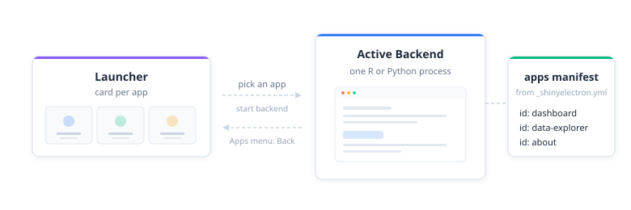

library(shinyelectron)
# Export the bundled R demo suite
r_suite <- example_app("suite")
export(appdir = r_suite, destdir = "output-r-suite")
# Export a Python suite from your own project
export(appdir = "path/to/my-py-suite", destdir = "output-py-suite")One repo, many apps, one launcher. A suite bundles several Shiny apps, R or Python, into a single Electron binary. Users open the launcher, pick an app, and switch whenever they like through the Apps menu.

Layout
A suite is a directory with a _shinyelectron.yml at the root and an apps/ folder. Each subfolder holds a normal Shiny app (app.R for R, app.py for Python).
R suite
The bundled demo at inst/demos/demo-r-app-suite/, read live:
demo-r-app-suite/
├── _shinyelectron.yml
└── apps
├── about
│ └── app.R
├── dashboard
│ └── app.R
└── data-explorer
└── app.RPython suite
The Python demo at inst/demos/demo-py-app-suite/ adds one file: a requirements.txt at the root that covers every app in the suite.
demo-py-app-suite/
├── _shinyelectron.yml
├── apps
│ ├── about
│ │ └── app.py
│ ├── dashboard
│ │ └── app.py
│ └── data-explorer
│ └── app.py
└── requirements.txtConfiguration
A top-level apps array switches shinyelectron into suite mode. Each entry needs three fields (id, name, path) and accepts four optional ones (description, type, runtime_strategy, icon).
R suite config
Read live from inst/demos/demo-r-app-suite/_shinyelectron.yml:
app:
name: "R Shiny Demo Suite"
version: "1.0.0"
build:
type: "r-shiny"
runtime_strategy: "system"
window:
width: 1100
height: 750
apps:
- id: dashboard
name: "Dashboard"
description: "Real-time analytics with live-updating stats and charts"
path: "./apps/dashboard"
- id: data-explorer
name: "Data Explorer"
description: "Browse and analyze built-in R datasets"
path: "./apps/data-explorer"
- id: about
name: "About"
description: "System information and runtime details"
path: "./apps/about"Python suite config
Only build.type changes. Read live from inst/demos/demo-py-app-suite/_shinyelectron.yml:
app:
name: "Python Shiny Demo Suite"
version: "1.0.0"
build:
type: "py-shiny"
runtime_strategy: "system"
window:
width: 1100
height: 750
apps:
- id: dashboard
name: "Dashboard"
description: "Analytics overview with live-updating stats and charts"
path: "./apps/dashboard"
- id: data-explorer
name: "Data Explorer"
description: "Browse and analyze built-in datasets"
path: "./apps/data-explorer"
- id: about
name: "About"
description: "System information and runtime details"
path: "./apps/about"Fields in an apps entry
| Field | Required | Description |
|---|---|---|
id |
Yes | Unique identifier (used in file paths and the apps manifest) |
name |
Yes | Display name shown on the launcher card |
path |
Yes | Relative path from the suite root to the app directory |
description |
No | Short text shown below the name on the launcher card |
type |
No | Override the default build.type for this specific app |
runtime_strategy |
No | Override the default build.runtime_strategy for this specific app |
icon |
No | Path to an icon image displayed on the launcher card |
Every app inherits build.type and build.runtime_strategy unless it overrides them. Suites can mix languages (some r-shiny, some py-shiny) and mix strategies (one app on shinylive, another on system). Most suites stay uniform, but the overrides are there when you need them.
Mixed-strategy suites
A single suite can bundle apps with different runtime strategies. Set a suite-wide default in build.runtime_strategy, then override it per app where it makes sense. This is handy when one app runs fine in the browser (shinylive) while another needs a real process for packages that do not compile to WebAssembly.
# _shinyelectron.yml
app:
name: "Mixed Suite"
version: "1.0.0"
build:
type: "r-shiny"
runtime_strategy: "shinylive" # suite default
apps:
- id: "viewer"
name: "Data Viewer"
description: "Lightweight tables and charts"
path: "./apps/viewer"
# inherits shinylive from build.runtime_strategy
- id: "modeler"
name: "Model Fitter"
description: "Needs packages that are not in WebR"
path: "./apps/modeler"
runtime_strategy: "system" # overrides the suite defaultPer-app runtime_strategy: overrides the suite default for just that app. The other apps keep inheriting the default. You can mix all five strategies this way, with the usual platform caveats (for example, bundled R still needs a portable R build for the target OS).
How dependencies are handled
R apps can be scanned for dependencies; Python apps cannot. R lets you skip declaration entirely and rely on the source. Python always asks you to write a list, just in one of two files. Both languages can also use _shinyelectron.yml for explicit declarations, and lists from any source merge into one install plan.
R apps
Automatic. shinyelectron runs renv::dependencies() over each app directory. It picks up library(), require(), pkg::func(), and loadNamespace() references in the source. Base and recommended R packages (stats, utils, MASS, lattice, and friends) are excluded automatically.
Explicit. Add a dependencies: block to the suite-level _shinyelectron.yml:
dependencies:
r:
packages: [shiny, ggplot2, dplyr]
repos: ["https://cloud.r-project.org"]Source-scan and declared packages merge. Set dependencies.auto_detect: false to skip the renv scan and install only the declared list.
Python apps
shinyelectron does not parse import statements: the module-name to package-name mapping is unreliable (import cv2 is opencv-python, import sklearn is scikit-learn). You declare what gets installed, in one of two places.
requirements.txt or pyproject.toml. A standard Python manifest at the suite root. All apps in the suite share one virtual environment. The demo’s requirements.txt:
shiny
numpy
matplotlibThat file covers every app in the suite.
_shinyelectron.yml. Add a python section to the same dependencies: block:
dependencies:
python:
packages: [shiny, numpy, pandas]
index_urls: ["https://pypi.org/simple"]Manifest-file and YAML packages merge. Set dependencies.auto_detect: false to skip reading the manifest and install only the YAML list.
Exporting a suite
export() reads the config, sees an apps array with two or more entries, and switches to suite mode. No extra flags.
You do not pass app_type or runtime_strategy. The YAML owns those choices, through build.type and build.runtime_strategy.
All five runtime strategies (shinylive, system, bundled, auto-download, container) work with suites, exactly as they do with single apps. Per-app overrides let one suite mix them.
Launcher and app switching
The Electron window opens to a launcher page. Each app gets a card with its name, description, type badge, and icon (your image, or a generated initial).
Click a card: the backend for that app starts, and the window navigates to it. The Apps menu offers “Back to Launcher,” which stops the backend and returns to the card grid.
One runtime, one active app
A suite runs a single R or Python process. Switching apps follows four steps:
- Stop the current backend.
- Show the launcher.
- User picks the next app.
- Start a fresh backend for that app.
Only one app runs at a time. No parallel runtimes, no duplicated processes, no extra installs.
Building your own suite
From scratch:
- Create a directory with an
apps/subfolder. - Put each Shiny app in its own subdirectory.
- Write
_shinyelectron.ymlwith anappsarray listing every app. - For Python suites, add
requirements.txtat the root. - Run
export()on the suite directory.
# Minimal example: create suite structure, then export
export(appdir = "my-suite", destdir = "my-suite-output")The config file is the single source of truth. Two or more entries in apps, each pointing at a valid app, and shinyelectron builds the launcher, the menu, and the switching logic for you.